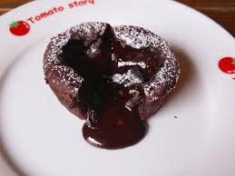

巧克力布朗尼（英語：Chocolate brownie）又稱為布朗尼、波士頓布朗尼，是一種小塊、濃味、像餅乾的巧克力蛋糕， 以它富含的巧克力色（brown）而得名。有時會覆上一層乳脂軟糖（fudge），或是在蛋糕體中混著核桃一類的乾果， 和碎片（巧克力、奶油糖果、花生奶油或其他）。而一般相信布朗尼首次問世是在1897年Sears and Roebuck百貨公司目錄中. 布朗尼通常一層巧克力糖衣或糖霜，也可能是增添香草或薄荷香氣的糖衣。